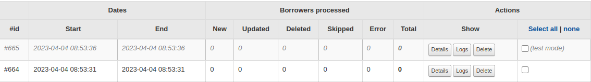

Logs
Runs
Runs record various information (depending on the options passed to the
script), and to separate runs started with the --dry-run option,
there is a specific class to distinguish them.
 On each run detail, you can see which borrowers have passed through the plugin, with information about the actions performed (creation, update or deletion for example) and the date of that action.

Patrons history
Debug options
You can pass some options to the script to get more information about the import:
--info-logs
Log infos about mapping or other configuration setting on each patron (--dry-run compatible)
--success-log
Log every successful action on database for each patron (no effect with --dry-run)
--debug
Printed on server side, Raw data from the source and Patron for Koha: patron transformed by plugin configuration and sent to koha database